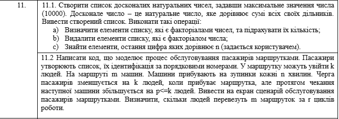
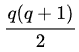
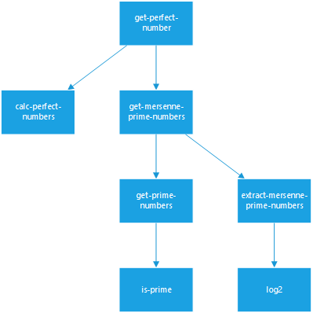
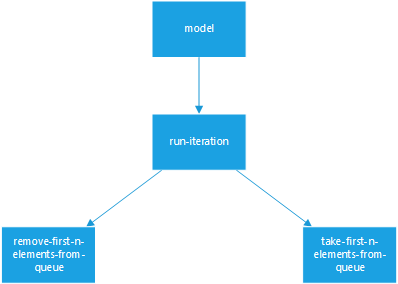
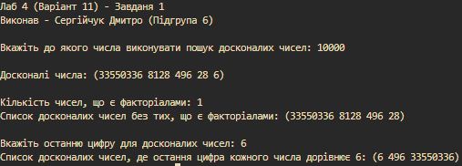
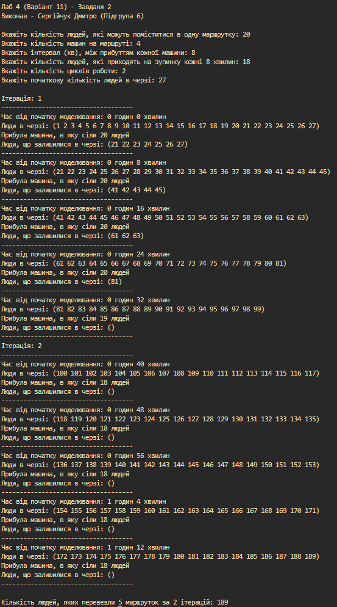
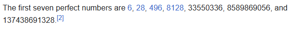

Мета
Опанувати теоретичні основи використання списків функціональними мовами та розробити програми обробки списків
Умова
Аналіз
Завдання 1
Досконалі числа відповідають такій формулі:
де q належить до простих чисел Мерсенна. Вони знаходяться за такою формулою:

де q та p - прості числа
Отже для того, щоб знайти перші n досконалих чисел, потрібно спершу знайти перші n простих чисел Мерсенна. Це можна зробити через фільтрацію перших n простих чисел. Відповідно до формули, число q є простим числом Мерсенна, якщо log2(q + 1) = p - просте число. З цієї формули видно, що p завжди менше за q, отже формулу можна застосовувати до списку простих чисел, відсортованого у порядку спадання, де для кожного q перевіряється, чи є його p в іншій частині списку
Завдання 2
Оскільки за умовою завдання, пасажири мають ідентифікуватися за порядковим номером, то для зручності можна згенерувати список всіх пасажирів наперед. Його розмір буде дорівнювати: початкова кількість людей в черзі + (кількість ітерацій * кількість машин * кількість людей, що приходить між прибуттями маршруток) - кількість людей, що приходить між прибуттями маршруток
Цей список можна використовувати під час моделювання моделі та забирати в нього необхідну кількість людей, імітуючи збільшення черги, між прибуттями маршруток. Для зручності можна зберігати це, як список, де перший елемент - список людей, які знаходяться в черзі, а другий елемент - ще не використані люди
HIPO Діаграма
Завдання 1
Завдання 2
Код
Code: Task1
#lang racket
(displayln "Лаб 4 (Варіант 11) - Завданя 1")
(displayln "Виконав - Сергійчук Дмитро (Підгрупа 6)")
(newline)
; Перевіряє, чи число (num) просте, базуючись на списку попередніх простих чисел (prev-prime-numbers)
(define (is-prime num prev-prime-numbers)
(if (null? prev-prime-numbers)
#true
(let ([prev-prime-num (car prev-prime-numbers)]
[next-list (cdr prev-prime-numbers)])
(if (= (modulo num prev-prime-num) 0)
#false
(is-prime num next-list)))))
; Повертає список перших (max) простих чисел
; - prime-numbers => акумулятор простих чисел
; - current-number => число, яке розглядається на поточній ітерації
(define (get-prime-numbers max [prime-numbers '(2)] [current-number 3])
(cond
[(>= current-number max) prime-numbers]
[else
(if (is-prime current-number prime-numbers)
(get-prime-numbers max (cons current-number prime-numbers) (+ current-number 2))
(get-prime-numbers max prime-numbers (+ current-number 2)))]))
; Повертає список перших (max) простих чисел Мерсенна
(define (get-mersenne-prime-numbers max)
(let ([prime-numbers (get-prime-numbers max)])
(define (log2 num)
(/ (log num) (log 2)))
; Повертає всі прості числа Мерсенна зі списку простих чисел
; - mersenne-prime-numbers - акумулятор
; - prev-prime-numbers - список простих чисел, які не було розглянуті на поточній ітерації
(define (extract-mersenne-prime-numbers [mersenne-prime-numbers '()] [prev-prime-numbers prime-numbers])
(if (null? prev-prime-numbers)
mersenne-prime-numbers
(let* ([current-prime-num (car prev-prime-numbers)]
[next-list (cdr prev-prime-numbers)]
[t (log2 (+ current-prime-num 1))])
(if (member t next-list =)
(extract-mersenne-prime-numbers (cons current-prime-num mersenne-prime-numbers) next-list)
(extract-mersenne-prime-numbers mersenne-prime-numbers next-list)))))
(extract-mersenne-prime-numbers)))
; Повертає список перших (max) досконалих чисел
(define (get-perfect-number max)
(define mersenne-prime-numbers (get-mersenne-prime-numbers max))
; Обчислює досконалі числа на основі простих чисел Марсенна
; - perfect-numbers - акумулятор
; - last-mersenne-prime-numbers - елементи списку чисел Марсенна, для яких ще не сформовано досконалі числа
(define (calc-perfect-numbers [perfect-numbers '()] [last-mersenne-prime-numbers mersenne-prime-numbers])
(if (null? last-mersenne-prime-numbers)
perfect-numbers
(let* ([current-prime-num (car last-mersenne-prime-numbers)]
[next-list (cdr last-mersenne-prime-numbers)]
[perfect-number (/ (* current-prime-num (+ current-prime-num 1)) 2)])
(calc-perfect-numbers (cons perfect-number perfect-numbers) next-list))))
(calc-perfect-numbers))
; Перевіряє, чи число є факторіалом іншого числа
(define (is-factorial? num [div 2])
(cond
[(<= num 0) #f]
[(= num 1) #t]
[(zero? (remainder num div))
(is-factorial? (/ num div) (add1 div))]
[else #f]))
; Повертах кількість елементів у списку, які є факторіалами, а також список без елементів-факторіалів
; - numbers - список елементів, які ще не розгянуті на поточній ітерації
; - numbers-without-factorials - акумулятор чисел без факторіалів
; - count - кількість чисел факторіалів
(define (count-factorials-in-list numbers [numbers-without-factorials numbers] [count 0])
(if (null? numbers)
(list numbers-without-factorials count)
(let ([current-number (car numbers)]
[next-list (cdr numbers)])
(if (is-factorial? current-number)
(count-factorials-in-list next-list (remove current-number numbers-without-factorials) (+ count 1))
(count-factorials-in-list next-list numbers-without-factorials count)))))
; Фільтрує список чисел за останньою цифрою
; - numbers - список елементів, які ще не розгянуті на поточній ітерації
; - last-digit - остання цифра, зо якою фільтрується список
; - filtered-numbers - акумулятор фільтрованих чисел
(define (filter-numbers-by-last-digit numbers last-digit [filtered-numbers '()])
(if (null? numbers)
filtered-numbers
(let ([current-num (car numbers)]
[next-list (cdr numbers)])
(if (= (remainder current-num 10) last-digit)
(filter-numbers-by-last-digit next-list last-digit (cons current-num filtered-numbers))
(filter-numbers-by-last-digit next-list last-digit filtered-numbers)))))
(printf "Вкажіть до якого числа виконувати пошук досконалих чисел: ")
(define max (read))
(newline)
(define perfect-numbers (get-perfect-number max))
(printf "Досконалі числа: ~a\n\n" perfect-numbers)
(define result (count-factorials-in-list perfect-numbers))
(printf "Кількість чисел, що є факторіалами: ~a\n" (last result))
(printf "Список досконалих чисел без тих, що є факторіалами: ~a\n\n" (car result))
(printf "Вкажіть останню цифру для досконалих чисел: ")
(define last-digit (read))
(printf "Список досконалих чисел, де остання цифра кожного числа дорівнює ~a: ~a" last-digit (filter-numbers-by-last-digit perfect-numbers last-digit))
Code: Task 2
#lang racket
(displayln "Лаб 4 (Варіант 11) - Завданя 2")
(displayln "Виконав - Сергійчук Дмитро (Підгрупа 6)")
(newline)
; Повертає значення з консолі, обмежене мінімальним та максимальни значеннями
(define (read-clamp min max)
(define input (read))
(cond
[(< input min) min]
[(> input max) max]
[else input]))
(printf "Вкажіть кількість людей, які можуть поміститися в одну маршрутку: ")
(define capacity (read-clamp 5 40))
(printf "Вкажіть кількість машин на маршруті: ")
(define number-of-cars (read-clamp 5 10))
(printf "Вкажіть інтервал (хв), між прибуттям кожної машини: ")
(define interval (read-clamp 1 10))
(printf "Вкажіть кількість людей, які приходять на зупинку кожні ~a хвилин: " interval)
(define passengers-per-interval (read-clamp 5 capacity))
(printf "Вкажіть кількість циклів роботи: ")
(define iterations (read-clamp 1 10))
(printf "Вкажіть початкову кількість людей в черзі: ")
(define start-number-of-passenger (read-clamp 10 50))
(newline)
; Створює список з n людей
(define (create-n-passengers n [passengers '(1)])
(define last-index (car passengers))
(if (= last-index n)
(reverse passengers)
(create-n-passengers n (cons (+ last-index 1) passengers))))
; Виводить час у консоль у вигляді: x годин y хвилин
(define (print-time minutes)
(let ([hours (quotient minutes 60)]
[minutes (remainder minutes 60)])
(printf "Час від початку моделювання: ~a годин ~a хвилин\n" hours minutes)))
; Видаляє перші n елементів з черги (списку), з перевіркою на розмір списку
(define (remove-first-n-elements-from-queue n queue)
(if (< (length queue) n) '() (drop queue n)))
; Повертає перші n елементів з черги (списку), з перевіркою на розмір списку
(define (take-first-n-elements-from-queue n queue)
(if (< (length queue) n) '() (take queue n)))
; Виконує ітерацію моделі (прогін всіх авто на маршруті)
; - passengers-info - список з 2 елементів
; - 1 елемент: поточна кількість людей в черзі
; - 2 елемент: доступні люди, що залишилися для наступних ітерацій
; - time-passed - час, що пройшов від початку моделювання
; - car-index - індекс машини
(define (run-iteration passengers-info time-passed [car-index 1])
(cond
[(> car-index number-of-cars) passengers-info]
[else
(let* ([queue (first passengers-info)]
[reduced-queue (remove-first-n-elements-from-queue capacity queue)]
[available-people (second passengers-info)]
[people-to-append (take-first-n-elements-from-queue passengers-per-interval available-people)]
[new-available-people (remove-first-n-elements-from-queue passengers-per-interval available-people)]
[new-queue (append reduced-queue people-to-append)])
(print-time time-passed)
(printf "Люди в черзі: ~a\n" queue)
(printf "Прибула машина, в яку сіли ~a людей\n" (- (length queue) (length reduced-queue)))
(printf "Люди, що залишилися в черзі: ~a\n" reduced-queue)
(printf "------------------------------------\n")
(run-iteration (list new-queue new-available-people) (+ time-passed interval) (+ car-index 1)))]))
; Виконує прогін всіх ітерацій моделі
; - passengers-info - список з 2 елементів
; - 1 елемент: поточна кількість людей в черзі
; - 2 елемент: доступні люди, що залишилися для наступних ітерацій
; - iteration-index - індекс поточної ітерації моделі
; - time-passed - час, що пройшов від початку моделювання
(define (model passengers-info [iteration-index 1] [time-passed 0])
(cond
[(<= iteration-index iterations)
(printf "Ітерація: ~a\n" iteration-index)
(printf "------------------------------------\n")
(define next-passenger-info (run-iteration passengers-info time-passed))
(model next-passenger-info (+ iteration-index 1) (+ time-passed (* interval number-of-cars)))]))
(define all-passengers (create-n-passengers
(-
(+ start-number-of-passenger (* number-of-cars iterations passengers-per-interval))
passengers-per-interval)))
(model (list (take all-passengers start-number-of-passenger) (drop all-passengers start-number-of-passenger)))
(printf "\nКількість людей, яких перевезли ~a маршруток за ~a ітерацій: ~a" number-of-cars iterations (length all-passengers))
Результати
Завдання 1
Завдання 2
Перевірка
Завдання 1
Для перевірки можна порівняти отримані значення з реальною послідовністю досконалих чисел, яку можна знайти на вікіпедії.
Отже отримані перші 5 досконалих чисел відповідають реальним значенням
Завдання 2
Завдання не потребує перевірки
Перевірка коду ШІ
Завдання 1
Введний запит: "чи відповідає даний код на мові програмування racket критеріям простоти та clean code? (код завдання №1)"
Відповідь Chat GPT
✅ Сильні сторони
- Коментарі якісні — короткі, по суті, пояснюють аргументи функцій. Це добре для читання коду
- Іменування логічне — get-prime-numbers, is-factorial?, filter-numbers-by-last-digit тощо мають змістовні назви
- Рекурсивна структура послідовна — усі функції побудовані за схожим принципом: перевірка базового випадку + рекурсивний виклик
- Немає "магічних чисел" — наприклад, [prime-numbers '(2)] [current-number 3] пояснює, чому саме такі значення
- Ввід-вивід із користувачем винесено внизу, програма логічно читається зверху вниз
⚠️ Недоліки та можливі покращення
-
Ітерація замість ручної рекурсії
У Racket рекурсію часто замінюють більш декларативними засобами:
- for/list, filter, foldl, map, andmap, ormap, remove*, count, тощо. Це робить код чистішим і коротшим, без втрати логіки.
Приклад:
Code(define (is-prime num primes) (andmap (λ(p) (not (zero? (modulo num p)))) primes))замість:
Code(define (is-prime num prev-prime-numbers) (if (null? prev-prime-numbers) #true (let ([prev-prime-num (car prev-prime-numbers)] [next-list (cdr prev-prime-numbers)]) (if (= (modulo num prev-prime-num) 0) #false (is-prime num next-list))))) -
Зайві акумулятори в деяких функціях
Наприклад, у count-factorials-in-list ти передаєш два акумулятори:
Code(numbers-without-factorials numbers) [count 0]Це можна спростити, якщо скористатись стандартними функціями partition або filter.
Приклад:
Code(define (count-factorials-in-list numbers) (define factorials (filter is-factorial? numbers)) (list (remove* factorials numbers) (length factorials)))Код стає втричі коротший і читається без жодного циклу.
-
Деякі назви дублюють зміст функцій
Наприклад, extract-mersenne-prime-numbers вже каже "отримати числа Мерсенна", тому параметр mersenne-prime-numbers виглядає надмірним — краще acc або просто використати filter. -
get-prime-numbers працює не зовсім коректно логічно
Ти перевіряєш всі непарні числа до max, але назва каже "повернути перші max простих чисел". А насправді функція повертає всі прості менші за max. → або зміни логіку, або перейменуй на get-primes-below. -
Дублювання рекурсивних структур
У тебе часто одна й та сама структура:
Code(if (null? xs) acc (let ([x (car xs)] [rest (cdr xs)]) (if (умова) (f rest ... ) (f rest ... ))))Можна спростити за допомогою foldl або for/fold. Racket підтримує це дуже добре.
-
Числа Мерсенна можна перевіряти простіше
Зараз ти береш log2 (+ p 1) і шукаєш це число серед простих. Краще прямо обчислити (2^p - 1) і перевірити, чи воно просте
Code(define (get-mersenne-primes primes) (filter (λ(p) (is-prime (sub1 (expt 2 p)) primes)) primes))Це точніше відображає визначення «просте число Мерсенна».
-
Можна уникнути зайвих let*
У багатьох місцях вони не додають ясності, наприклад:
Code(let* ([current-prime-num (car list)] [next-list (cdr list)] [t (log2 (+ current-prime-num 1))]) ...)Можна скоротити до:
Code(define current (car list)) (define next (cdr list)) ...або навіть використовувати pattern matching:
Code(match list ['() ...] [(cons x xs) ...])
Завдання 2
Введний запит: "чи відповідає даний код на мові програмування racket критеріям простоти та clean code? (код завдання №2)"
Відповідь Chat GPT
Цей код виглядає охайно, має хорошу логічну структуру, але якщо говорити з позиції clean code і принципів простоти (KISS, DRY, SRP) — він загалом хороший, але є кілька моментів, які заважають вважати його ідеально «чистим» і «простим».
Далі — детальний розбір
✅ Сильні сторони
-
Гарна структурованість
Програма побудована зверху вниз: спочатку введення, потім допоміжні функції, потім основна логіка (run-iteration, model).
-
Коментарі якісні
Вони лаконічно пояснюють призначення функцій і параметрів — це відповідає clean code
-
Зрозумілі назви
Функції мають змістовні назви (read-clamp, create-n-passengers, run-iteration), і вони відображають їхню поведінку
-
Логічна послідовність процесу
Спочатку створюється список пасажирів, потім виконується симуляція, потім — покроковий вивід
-
Відсутність магічних чисел
Усі межі (5 40, 1 10 тощо) описані через аргументи або read-clamp
⚠️ Проблеми щодо простоти та clean code
-
Дублювання логіки в take-first-n-elements-from-queue і remove-first-n-elements-from-queue
Ці дві функції практично однакові, відрізняються лише тим, що одна повертає take, а інша — drop.
👉 Рішення:
Можна об’єднати в одну функцію з параметром, наприклад:
Code(define (queue-part queue n part) (cond [(eq? part 'take) (if (< (length queue) n) '() (take queue n))] [(eq? part 'drop) (if (< (length queue) n) '() (drop queue n))]))або просто видалити перевірку на довжину, бо take/drop в Racket вже безпечні: вони не кидають помилки, якщо n > length.
👉 тобто:
Code(define (remove-first-n-elements-from-queue n queue) (drop queue n)) (define (take-first-n-elements-from-queue n queue) (take queue n))Це і простіше, і чистіше.
-
Функція create-n-passengers надто складна
Вона створює послідовність чисел 1..n вручну через рекурсію.
👉 Racket має стандартний спосіб:
Code(define (create-n-passengers n) (range 1 (add1 n)))Одна стрічка замість п’яти — і абсолютно те ж саме.
-
Зайва вкладеність у run-iteration і model
Рекурсія з великою кількістю умов робить код громіздким. Для чистоти можна використати for/fold або for з побічним ефектом для симуляції:
Code(for ([i (in-range 1 (add1 interations))]) (printf "Ітерація: ~a\n" i) (printf "-------------------\n") (set! passengers-info (run-iteration passengers-info time-passed)) (set! time-passed (+ time-passed (* interval number-of-cars))))Це зберігає всю логіку, але зменшує вкладеність і прибирає рекурсію, яка тут не несе користі (це не функціональне дерево, а просто цикл).
-
Можна винести структуру даних для passengers-info
Ти зберігаєш пару (list queue available) як список, а потім постійно робиш first і second. Краще створити просту структуру:
Code(struct passengers-info (queue available))і тоді:
Code(define queue (passengers-info-queue info)) (define available (passengers-info-available info))→ код одразу стає зрозумілішим і менш схильним до помилок.
-
Іменування дрібних параметрів
passengers-per-interval — гарне ім’я, але трохи довге; в деяких місцях можна замінити на коротше (batch-size), якщо використовується часто.
-
read-clamp не враховує некоректне введення
Користувач може ввести не число або символ. Для clean code добре б обробити помилку:
Code(define (read-clamp min max) (let ([input (with-handlers ([exn:fail? (λ(_) min)]) (read))]) (cond [(not (number? input)) min] [(< input min) min] [(> input max) max] [else input])))
Висновок
В даній лабораторній роботі було продемонстровано базову роботу з списками в мові програмування racket. Списки можуть бути оголошені двома функціями: quote та list. Вони відрізняються тим, що quote, на відміну від list, спримає всі дані, як літерали, а не як код/змінні. Функція list вже підтримує оголошення списків з динамічними даними, які було оголошено під час роботи програми
У даному завданні було використано такі функції для роботи з списками:
- car - повертає голову списку
- cdr - повертає хвіст голови списку
- first - повертає перший елемент списку
- second - повертає другий елемент списку
- take - повертає перші n елементів списку
- drop - повертає список, без перших n елементів
- length - повертає розмір списку